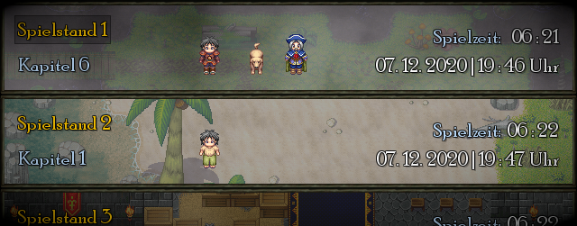
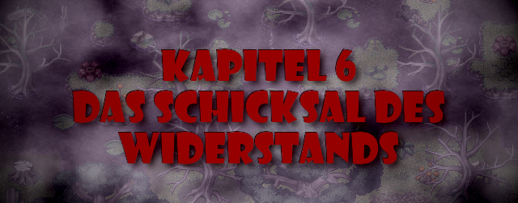
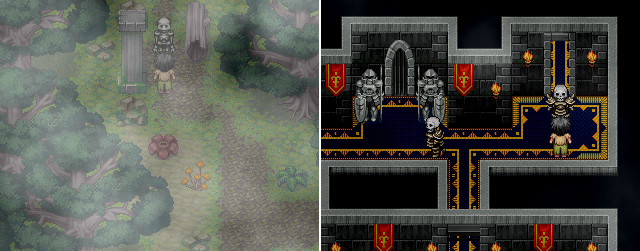
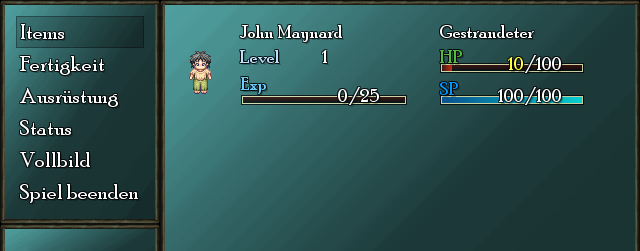
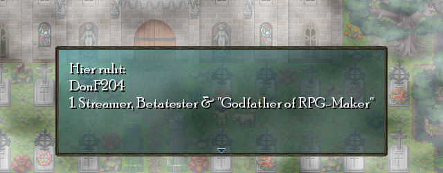
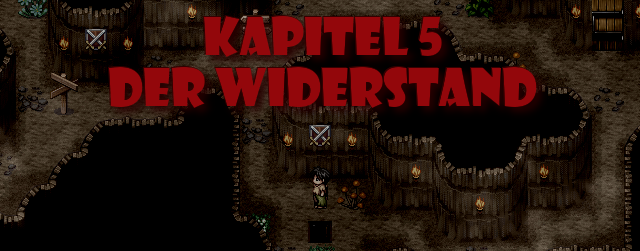
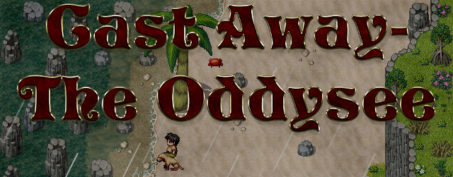

Die Demo 0.072 für Cast Away - The Oddysee ist jetzt verfügbar! Sie beinhaltet ein neues "Spiel laden" / "Spiel speichern" Menü und mehr:
● Neues "Spiel laden" bzw. "Spiel speichern" Menü
● In den Menüs "Status", "Ausrüstung" & "Fertigkeiten" kann jetzt mit "E" und "Q" navigiert werden
● Zwei neue Gebietskarten inklusive Quests hinzugefügt
● Neue Konfigurationsdatei hinzugefügt: "Video.cfg" (Mehr dazu im Changelog)
● Anpassung der Darstellung von Items im Inventar
● Anpassungen des Kampfsystems
● Fehlerbehebungen
● Und mehr!
Den genauen Changelog könnt ihr hier lesen!

Die Demo 0.07 für Cast Away - The Oddysee ist jetzt verfügbar! Sie beinhaltet das 6. Kapitel und mehr:
● Kapitel 6 hinzugefügt
● Geheimes MoleMan Minispiel hinzugefügt
● Neue Grabsteine hinzugefügt
● Es gibt neue und noch stärkere Gegner
● Neue Items und Quests hinzugefügt
● Das Kistenlagerungssystem in der Strandhütte wurde entfernt
● Fehlerbehebungen
● Und mehr!
Den genauen Changelog könnt ihr hier lesen!

Die Demo 0.063 für Cast Away - The Oddysee ist jetzt verfügbar! Sie beinhaltet QoL Updates und das Ende für Kapitel 5:
● Ende für Kapitel 5 hinzugefügt
● Splashscreens bei Spielstart können jetzt mit Leertaste oder Enter übersprungen werden
● Man wird nur noch einmal bei Spielstart nach Vollbild gefragt
● Das Hauptmenü baut sich nur noch einmal auf sodass späteres wechseln ins Hauptmenü schneller geht
● Besitzt man bereits einen Spielstand, wird standardmäßig "Spiel Laden" ausgewählt
● Die verschiedenen Skelett-Typen wurden mehr individualisiert
● Fehlerbehebungen
● Und mehr!
Den genauen Changelog könnt ihr hier lesen!

Die Demo 0.062 für Cast Away - The Oddysee ist jetzt verfügbar! Sie konzentriert sich größtenteils auf Fehlerbehebungen und Anpassungen:
● Weitere Anpassungen bezüglich der Text-Lesbarkeit
● Stream-Modus wurde hinzugefügt (Deaktiviert Funktionen wie "Spiel Beenden")
● Neuer Ort für Configs: AppData/Roaming/Cast Away - The Oddysee/Configs
● Configs werden auch beim Laden eines bisherigen Spielstandes abgerufen
● Das Intro kann übersprungen werden wenn bereits Spielstände existieren
● Fehlerbehebungen
● Und mehr!
Den genauen Changelog könnt ihr hier lesen!

Die Demo 0.061 für Cast Away - The Oddysee ist jetzt verfügbar! Sie konzentriert sich größtenteils auf Fehlerbehebungen und Anpassungen:
● Die Dialogschrift ist jetzt besser lesbar
● Rechtschreibfehler und Grammatik korrigiert
● Es wurde ein Grabstein für DonF204 hinzugefügt
● Und mehr!
Den genauen Changelog könnt ihr hier lesen!

Die Demo 0.06 für Cast Away - The Oddysee ist jetzt verfügbar! Was ist neu:
● Ende von Kapitel 4
● Kapitel 5
● Spielstände und Screenshots werden jetzt in AppData/Roaming/Cast Away - The Oddysee/ gespeichert
● Zusätzliche Schriftarten müssen nicht länger installiert werden
● Neue Gegner
● Neue Items
● Überarbeitungen von Kapitel 1-4
● Überarbeitungen am Kampfsystem
● Fehlerbehebungen
● Und mehr!
Den genauen Changelog könnt ihr hier lesen!

Der neue Launcher für Cast Away - The Oddysee ist jetzt verfügbar! Über ihn lässt sich Cast Away - The Oddysee starten, installieren und updaten.